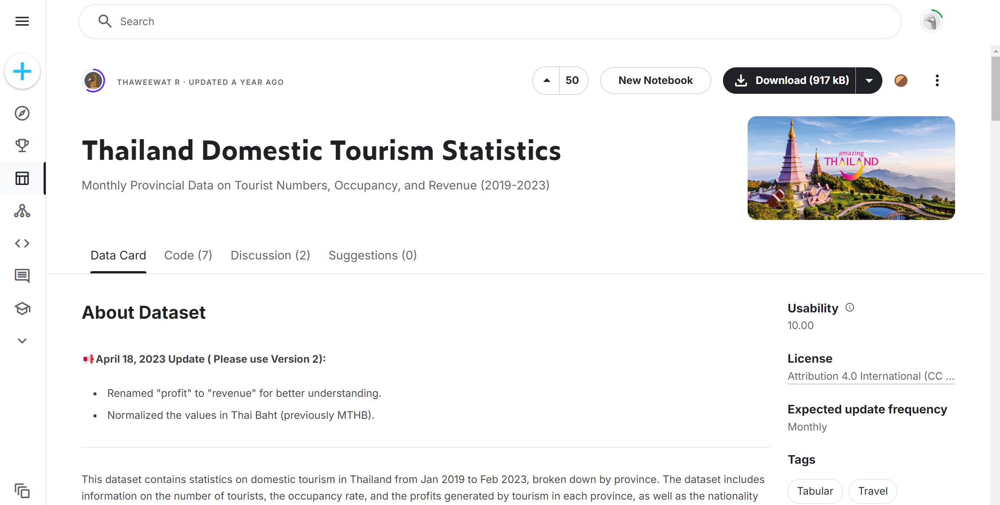
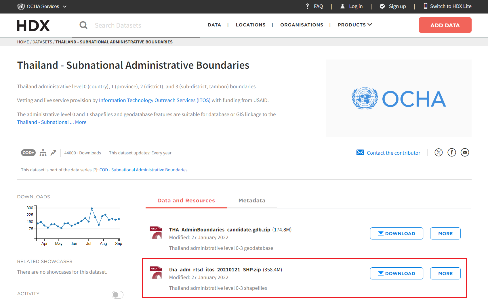
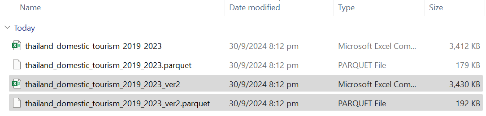
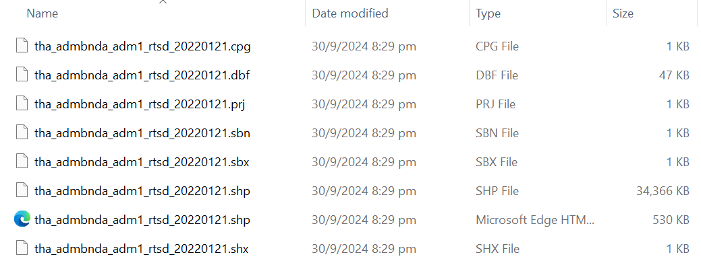
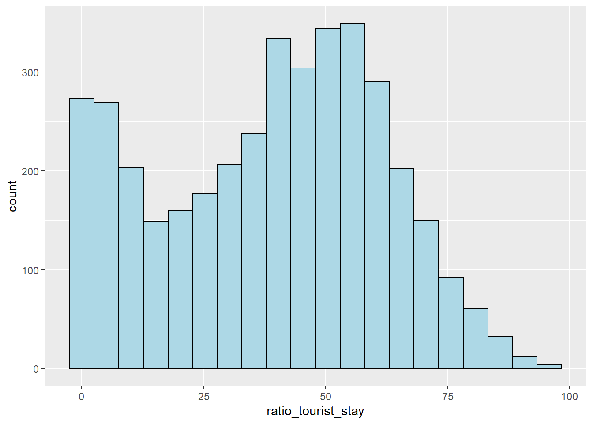
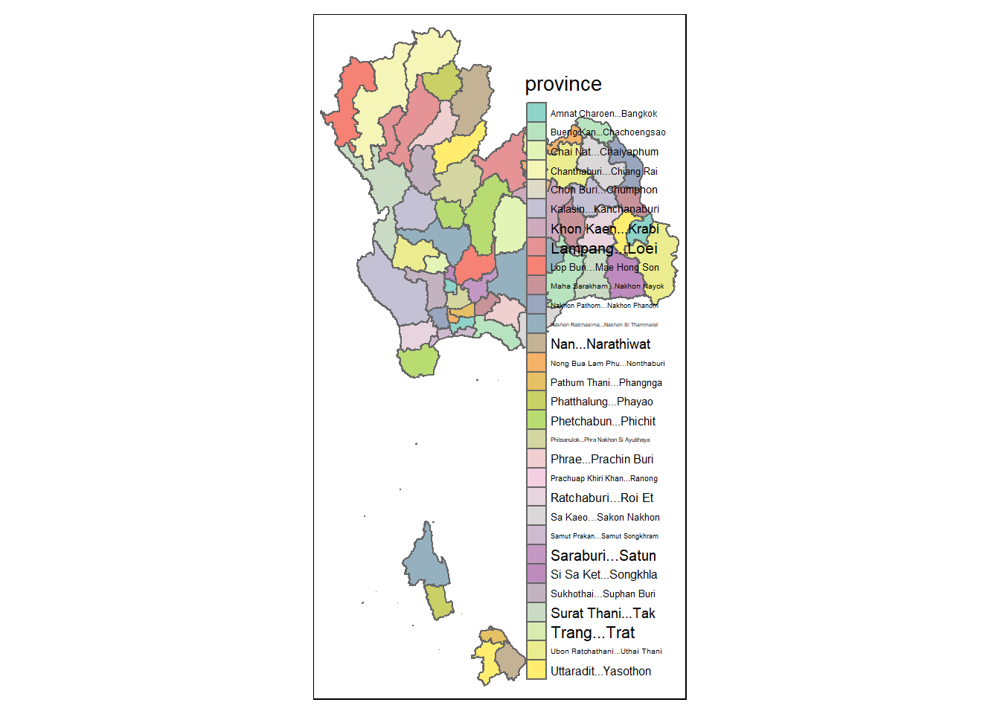
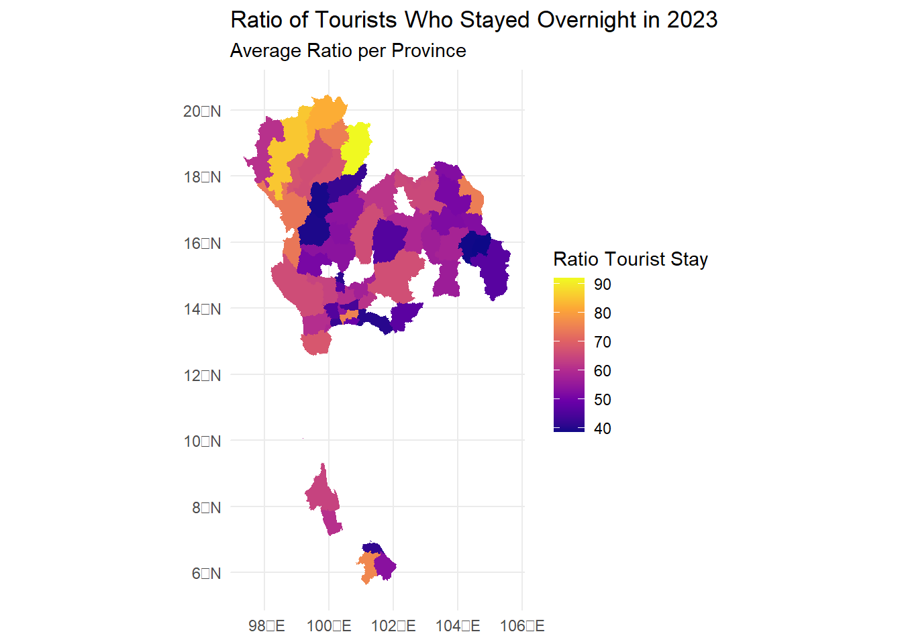

pacman::p_load(sf, sfdep, tmap, plotly, tidyverse, lubridate, Kendall)Take-Home Exercise 02
Discovering Impacts of COVID-19 on Thailand Tourism Economy using Spatial & Spatio-Temporal Statistics
1.0 Overview
Tourism is one of Thailand’s largest industries, accounting for some 20% of the gross domestic product (GDP). In 2019, Thailand earned 90 billion US$ from domestic and international tourism, but the COVID-19 pandemic caused revenues to crash to 24 billion US$ in 2020.
The revenue from tourism industry have been recovered gradually since September 2021. However, it is important to note that the tourism economy of Thailand are not evenly distributed. Note that the tourism economy of Thailand are mainly focused on five provinces, namely Bangkok, Phuket, Chon Buri, Krabi and Chiang Mai.
1.1 Objectives
Through this exercise, we are interested to discover the following:
If the key indicators of tourism economy of Thailand are independent from space and space and time
If the tourism economy is indeed spatial and spatio-temporal dependent
- If so, we would like to detect where are the clusters and outliers, and the emerging hot spot/cold spot areas
1.2 The Task
We will be performing the following tasks in this exercise:
Preparation of the following Geospatial data layer:
Study area layer in sf polygon features (at province level incl. Bangkok)
Tourism economy indicators layer within the study area in sf polygon features
Derived tourism economy indicator layer in spacetime s3 class of sfdep, with time series kept at month and year levels
Perform Global Spatial Autocorrelation Analysis using sfdep methods
Perform Local Spatial Autocorrelation Analysis using sfdep methods
Perform Emerging Hot/Cold Spot Analysis using sfdep methods
1.3 Analytical Tools
The following R packages will be used for this exercise:
sf, which is used for importing and handling geospatial data in R
sfdep, which is used for spatial dependence with spatial features
tmap, which is used to prepare cartographic quality choropleth maps
plotly, for creating interactive graphs
tidyverse, which is mainly for wrangling attribute data in R
lubridate, which is used to parse and manipulate dates
Kendall, which helps compute the Kendall rank correlation and Mann-Kendall trend test
The code chunk below uses p_load() of pacman package to check if the necessary packages have been installed in R. If yes, we will load the packages on R environment as shown below.
2.0 Data
2.1 Getting the Data
For this exercise, we will be using two datasets:
- Thailand Domestic Tourism Statistics from Kaggle (Version 2)

- Thailand - Subnational Administrative Boundaries from HDX

2.2 Importing the Data
These are the files we have for Thailand Domestic Tourism Statistics:

Note that we will only use Version 2 of the dataset.
The code chunk below is used to load the ver2 data into our R environment.
#|eval: false
tourism <- read_csv("data/aspatial/thailand_domestic_tourism_2019_2023_ver2.csv")Rows: 30800 Columns: 7
── Column specification ────────────────────────────────────────────────────────
Delimiter: ","
chr (5): province_thai, province_eng, region_thai, region_eng, variable
dbl (1): value
date (1): date
ℹ Use `spec()` to retrieve the full column specification for this data.
ℹ Specify the column types or set `show_col_types = FALSE` to quiet this message.write_rds(tourism, "data/rds/tourism.rds")The code chunk below will be used to import the saved tourism.rds into R environment.
tourism <- read_rds("data/rds/tourism.rds")These are the files we have for Thailand - Subnational Administrative Boundaries:

Recall that this HDX data source contains information on 4 administrative levels - 0 for Country, 1 for Province, 2 for District and 3 for Sub-District. Hence, there were numerous files downloaded from this data source. However, we only want to focus on Province-level analysis for this exercises. As such, we will only load the ADM1 data into our R environment.
The code chunk below is used to load the ver2 data into our R environment.
#|eval: false
boundaries = st_read(dsn = "data/geospatial",
layer = "tha_admbnda_adm1_rtsd_20220121")Reading layer `tha_admbnda_adm1_rtsd_20220121' from data source
`C:\byebhai8\ISSS626-GeospatialAnalytics\Take-Home_Ex\Take-Home_Ex02\data\geospatial'
using driver `ESRI Shapefile'
Simple feature collection with 77 features and 16 fields
Geometry type: MULTIPOLYGON
Dimension: XY
Bounding box: xmin: 97.34336 ymin: 5.613038 xmax: 105.637 ymax: 20.46507
Geodetic CRS: WGS 84write_rds(boundaries, "data/rds/boundaries.rds")The code chunk below will be used to import the saved boundaries.rds into R environment.
boundaries <- read_rds("data/rds/boundaries.rds")3.0 Data Wrangling
3.1 Tourism Data
Let’s take a quick look at the newly imported tourism data by using the glimpse() function of dplyr package as shown below.
glimpse(tourism)Rows: 30,800
Columns: 7
$ date <date> 2019-01-01, 2019-01-01, 2019-01-01, 2019-01-01, 2019-01…
$ province_thai <chr> "กรุงเทพมหานคร", "ลพบุรี", "พระนครศรีอยุธยา", "สระบุรี", "ชัยนาท…
$ province_eng <chr> "Bangkok", "Lopburi", "Phra Nakhon Si Ayutthaya", "Sarab…
$ region_thai <chr> "ภาคกลาง", "ภาคกลาง", "ภาคกลาง", "ภาคกลาง", "ภาคกลาง", "…
$ region_eng <chr> "central", "central", "central", "central", "central", "…
$ variable <chr> "ratio_tourist_stay", "ratio_tourist_stay", "ratio_touri…
$ value <dbl> 93.37, 61.32, 73.37, 67.33, 79.31, 71.70, 64.65, 71.21, …The raw tourism data has 30,800 rows and 7 columns. This data will serve as the attribute table that we will use moving forward.
Now, we will perform following actions using the code chunk below:
Exclude fields that contain text in thai language - province_thai, region_thai
Create new fields for month and year using the existing date field
Unpivot the variable & value columns to expose new fields for our analysis
Convert revenue fields to be shown in the thousands
Rename fields to a more appropriate name
tourism <- tourism %>%
select(1,3,5,6,7) %>%
mutate(month = month(date, label = TRUE, abbr = TRUE),
year = year(date)) %>%
pivot_wider(names_from = variable,
values_from = value) %>%
mutate(revenue_all = revenue_all/1000,
revenue_thai = revenue_thai/1000,
revenue_foreign = revenue_foreign/1000) %>%
rename(province = province_eng,
region = region_eng,
revenue_all_K = revenue_all,
revenue_thai_K = revenue_thai,
revenue_foreign_K = revenue_foreign)Let’s take a look at the cleaned up tourism data set:
glimpse(tourism)Rows: 3,850
Columns: 13
$ date <date> 2019-01-01, 2019-01-01, 2019-01-01, 2019-01-01, 20…
$ province <chr> "Bangkok", "Lopburi", "Phra Nakhon Si Ayutthaya", "…
$ region <chr> "central", "central", "central", "central", "centra…
$ month <ord> Jan, Jan, Jan, Jan, Jan, Jan, Jan, Jan, Jan, Jan, J…
$ year <dbl> 2019, 2019, 2019, 2019, 2019, 2019, 2019, 2019, 201…
$ ratio_tourist_stay <dbl> 93.37, 61.32, 73.37, 67.33, 79.31, 71.70, 64.65, 71…
$ no_tourist_stay <dbl> 3334971, 51858, 117052, 89850, 27141, 118629, 18147…
$ no_tourist_all <dbl> 5959075, 268664, 730329, 207236, 79073, 296107, 494…
$ no_tourist_thai <dbl> 3534061, 266301, 561553, 201400, 78514, 284408, 491…
$ no_tourist_foreign <dbl> 2425014, 2363, 168776, 5836, 559, 11699, 248, 5281,…
$ revenue_all_K <dbl> 81926490, 457240, 1438730, 347790, 101790, 407980, …
$ revenue_thai_K <dbl> 29742580, 451830, 1054250, 336190, 100900, 391120, …
$ revenue_foreign_K <dbl> 52183910, 5410, 384480, 11600, 890, 16860, 390, 575…The updated tourism data has 3,850 rows and 13 columns. Let’s analyse the fields that we have now.
| S.No | Field | Description |
|---|---|---|
| 1 | Date | Day-Month-Year of when the statistic was recorded |
| 2 | Province | Name of Province in Thailand |
| 3 | Region | Name of Region to which the Province belongs to in Thailand |
| 4 | Month | Month of when statistic was recorded |
| 5 | Year | Year of when statistic was recorded |
| 6 | Ratio Tourist Stay | Ratio of tourists who stayed overnight in the Province |
| 7 | No Tourist Stay | Number of tourists who stayed overnight in the Province |
| 8 | No Tourist All | Number of Domestic tourists who visited the Province |
| 9 | No Tourist Thai | Number of Thai tourists who visited the Province |
| 10 | No Tourist Foreign | Number of Foreign tourists who visited the Province |
| 11 | Revenue All (in K) | Revenue generated by tourism industry in the Province |
| 12 | Revenue Thai (in K) | Revenue generated by Thai tourists in the Province |
| 13 | Revenue Foreign (in K) | Revenue generated by Foreign tourists in the Province |
We can view the summary statistics of these newly exposed fields using the code chunk below.
summary(tourism) date province region month
Min. :2019-01-01 Length:3850 Length:3850 Jan : 385
1st Qu.:2020-01-01 Class :character Class :character Feb : 385
Median :2021-01-16 Mode :character Mode :character Mar : 308
Mean :2021-01-15 Apr : 308
3rd Qu.:2022-02-01 May : 308
Max. :2023-02-01 Jun : 308
(Other):1848
year ratio_tourist_stay no_tourist_stay no_tourist_all
Min. :2019 Min. : 0.00 Min. : 0 Min. : 0
1st Qu.:2020 1st Qu.:20.18 1st Qu.: 16271 1st Qu.: 39092
Median :2021 Median :41.81 Median : 44579 Median : 92122
Mean :2021 Mean :38.93 Mean : 105161 Mean : 206328
3rd Qu.:2022 3rd Qu.:56.20 3rd Qu.: 90902 3rd Qu.: 203646
Max. :2023 Max. :95.86 Max. :3335728 Max. :6131044
no_tourist_thai no_tourist_foreign revenue_all_K revenue_thai_K
Min. : 0 Min. : 0.0 Min. : 0 Min. : 0
1st Qu.: 37169 1st Qu.: 49.2 1st Qu.: 63322 1st Qu.: 59250
Median : 88782 Median : 553.0 Median : 195495 Median : 177310
Mean : 173962 Mean : 32366.1 Mean : 1343876 Mean : 663644
3rd Qu.: 184256 3rd Qu.: 5189.5 3rd Qu.: 506000 3rd Qu.: 460025
Max. :4087756 Max. :2473725.0 Max. :110287280 Max. :45060240
revenue_foreign_K
Min. : -4
1st Qu.: 110
Median : 1540
Mean : 680232
3rd Qu.: 17420
Max. :85025200
We can also perform exploratory data analysis using the code chunk below. By plotting histograms, we can easily identify the overall distribution of the data values.
ggplot(data=tourism,
aes(x=`ratio_tourist_stay`)) +
geom_histogram(bins=20,
color="black",
fill="light blue")
From the above plot, we can see that majority of the ratios are concentrated between 25% and 75%. The highest frequency appears around the 50% mark, indicating that a significant portion of tourists tend to stay overnight about half the time. However, this distribution tails off towards the extremes (near 100%), suggesting that fewer tourists stay overnight very frequently.
3.2 Boundary Data
Likewise, we can run the glimpse() function on the boundaries data for some quick insights.
glimpse(boundaries)Rows: 77
Columns: 17
$ Shape_Leng <dbl> 2.417227, 1.695100, 1.251111, 1.884945, 3.041716, 1.739908,…
$ Shape_Area <dbl> 0.13133873, 0.07926199, 0.05323766, 0.12698345, 0.21393797,…
$ ADM1_EN <chr> "Bangkok", "Samut Prakan", "Nonthaburi", "Pathum Thani", "P…
$ ADM1_TH <chr> "กรุงเทพมหานคร", "สมุทรปราการ", "นนทบุรี", "ปทุมธานี", "พระนครศรีอ…
$ ADM1_PCODE <chr> "TH10", "TH11", "TH12", "TH13", "TH14", "TH15", "TH16", "TH…
$ ADM1_REF <chr> NA, NA, NA, NA, NA, NA, NA, NA, NA, NA, NA, NA, NA, NA, NA,…
$ ADM1ALT1EN <chr> NA, NA, NA, NA, NA, NA, NA, NA, NA, NA, NA, NA, NA, NA, NA,…
$ ADM1ALT2EN <chr> NA, NA, NA, NA, NA, NA, NA, NA, NA, NA, NA, NA, NA, NA, NA,…
$ ADM1ALT1TH <chr> NA, NA, NA, NA, NA, NA, NA, NA, NA, NA, NA, NA, NA, NA, NA,…
$ ADM1ALT2TH <chr> NA, NA, NA, NA, NA, NA, NA, NA, NA, NA, NA, NA, NA, NA, NA,…
$ ADM0_EN <chr> "Thailand", "Thailand", "Thailand", "Thailand", "Thailand",…
$ ADM0_TH <chr> "ประเทศไทย", "ประเทศไทย", "ประเทศไทย", "ประเทศไทย", "ประเทศ…
$ ADM0_PCODE <chr> "TH", "TH", "TH", "TH", "TH", "TH", "TH", "TH", "TH", "TH",…
$ date <date> 2019-02-18, 2019-02-18, 2019-02-18, 2019-02-18, 2019-02-18…
$ validOn <date> 2022-01-22, 2022-01-22, 2022-01-22, 2022-01-22, 2022-01-22…
$ validTo <date> NA, NA, NA, NA, NA, NA, NA, NA, NA, NA, NA, NA, NA, NA, NA…
$ geometry <MULTIPOLYGON [°]> MULTIPOLYGON (((100.6139 13..., MULTIPOLYGON (…The raw boundaries data has 77 rows and 17 columns. This data contains the geospatial information we require for our analysis.
Now, we will perform following actions using the code chunk below:
Exclude fields that contain text in thai language - ADM1_TH, ADM1ALT1TH, ADM1ALT2TH, ADM0_TH
Exclude fields that contain only one value - ADM1_REF, ADM1ALT1EN, ADM1ALT2EN, ADM0_EN, ADM0_PCODE, date, validOn, validTo
Exclude unnecessary fields that we will not use in our analysis - Shape_Leng, Shape_Area, ADM1_PCODE
Rename fields to a more appropriate name
boundaries <- boundaries %>%
select(3, 17) %>%
rename(province = ADM1_EN)We also want to keep the geometry field as a polygon instead of a multipolygon object. For this, we will first cast the geometry field into a polygon type, and then merge the polygons for each province into a single polygon.
#|eval: false
boundary <- boundaries %>%
group_by(province) %>%
summarise(geometry = st_union(geometry))
boundary$geometry <- st_cast(boundary$geometry, "POLYGON")Warning in st_cast.MULTIPOLYGON(X[[i]], ...): polygon from first part only
Warning in st_cast.MULTIPOLYGON(X[[i]], ...): polygon from first part only
Warning in st_cast.MULTIPOLYGON(X[[i]], ...): polygon from first part only
Warning in st_cast.MULTIPOLYGON(X[[i]], ...): polygon from first part only
Warning in st_cast.MULTIPOLYGON(X[[i]], ...): polygon from first part only
Warning in st_cast.MULTIPOLYGON(X[[i]], ...): polygon from first part only
Warning in st_cast.MULTIPOLYGON(X[[i]], ...): polygon from first part only
Warning in st_cast.MULTIPOLYGON(X[[i]], ...): polygon from first part only
Warning in st_cast.MULTIPOLYGON(X[[i]], ...): polygon from first part only
Warning in st_cast.MULTIPOLYGON(X[[i]], ...): polygon from first part only
Warning in st_cast.MULTIPOLYGON(X[[i]], ...): polygon from first part only
Warning in st_cast.MULTIPOLYGON(X[[i]], ...): polygon from first part only
Warning in st_cast.MULTIPOLYGON(X[[i]], ...): polygon from first part only
Warning in st_cast.MULTIPOLYGON(X[[i]], ...): polygon from first part only
Warning in st_cast.MULTIPOLYGON(X[[i]], ...): polygon from first part onlyboundary <- st_sf(boundary,
geometry = st_geometry(boundary))
write_rds(boundary, "data/rds/boundary.rds")The code chunk below will be used to import the saved boundary.rds into R environment.
boundary <- read_rds("data/rds/boundary.rds")Let’s take a look at the cleaned up tourism data set:
glimpse(boundary)Rows: 77
Columns: 2
$ province <chr> "Amnat Charoen", "Ang Thong", "Bangkok", "Bueng Kan", "Buri R…
$ geometry <POLYGON [°]> POLYGON ((104.9598 16.28368..., POLYGON ((100.3329 14…The updated tourism data has 77 rows and 2 columns. Let’s analyse the fields that we have now.
| S.No | Field | Description |
|---|---|---|
| 1 | Province | Name of Province in Thailand |
| 2 | Geometry | Polygon object that represents each Province in Thailand |
We can use qtm() to have a quick visual representation of the boundary data, allowing us to confirm that the geometries and province names are correct,
qtm(boundary, fill = "province")Warning: Number of levels of the variable "province" is 77, which is larger
than max.categories (which is 30), so levels are combined. Set
tmap_options(max.categories = 77) in the layer function to show all levels.Some legend labels were too wide. These labels have been resized to 0.38, 0.36, 0.43, 0.40, 0.44, 0.44, 0.55, 0.40, 0.31, 0.29, 0.23, 0.60, 0.31, 0.39, 0.47, 0.49, 0.25, 0.50, 0.33, 0.53, 0.40, 0.29, 0.62, 0.49, 0.41, 0.58, 0.32, 0.51. Increase legend.width (argument of tm_layout) to make the legend wider and therefore the labels larger.
3.3 Creating Time Series Cube (Month)
We will first group the tourism data by months before creating the spacetime object for monthly data.
#|eval: false
tourismMonthly <- tourism %>%
group_by(province, month) %>%
summarise(across(c("ratio_tourist_stay", "no_tourist_stay", "no_tourist_all", "no_tourist_thai",
"no_tourist_foreign", "revenue_all_K", "revenue_thai_K", "revenue_foreign_K"),
mean,
na.rm = TRUE),
.groups = 'drop')Warning: There was 1 warning in `summarise()`.
ℹ In argument: `across(...)`.
ℹ In group 1: `province = "Amnat Charoen"` and `month = Jan`.
Caused by warning:
! The `...` argument of `across()` is deprecated as of dplyr 1.1.0.
Supply arguments directly to `.fns` through an anonymous function instead.
# Previously
across(a:b, mean, na.rm = TRUE)
# Now
across(a:b, \(x) mean(x, na.rm = TRUE))write_rds(tourismMonthly, "data/rds/tourismMonthly.rds")The code chunk below will be used to import the saved tourismMonthly.rds into R environment.
tourismMonthly <- read_rds("data/rds/tourismMonthly.rds")We will then create a spatio-temporal object using the spacetime() function of sfdep. We will specify the following properties:
- the data, which is the tourismMonthly data.frame object
- the geometry, which is the boundary sf object
- the location identifiers, which is the province
- the time column, which is month
#|eval: false
tourismMonthlyST <- spacetime(tourismMonthly,
boundary,
.loc_col = "province",
.time_col = "month")
write_rds(tourismMonthlyST, "data/rds/tourismMonthlyST.rds")The code chunk below will be used to import the saved tourismMonthlyST.rds into R environment.
tourismMonthlyST <- read_rds("data/rds/tourismMonthlyST.rds")We can use is_spacetime_cube() of sfdep package to verify if tourismMonthlyST is indeed a space-time cube object.
is_spacetime_cube(tourismMonthlyST)[1] TRUEThe TRUE return confirms that tourismMonthlyST is indeed a space-time cube.
3.4 Creating Time Series Cube (Year)
Similarly, we will group the tourism data by years before creating the spacetime object for yearly data.
#|eval: false
tourismYearly <- tourism %>%
group_by(province, year) %>%
summarise(across(c("ratio_tourist_stay", "no_tourist_stay", "no_tourist_all", "no_tourist_thai",
"no_tourist_foreign", "revenue_all_K", "revenue_thai_K", "revenue_foreign_K"),
mean,
na.rm = TRUE),
.groups = 'drop')
write_rds(tourismYearly, "data/rds/tourismYearly.rds")The code chunk below will be used to import the saved tourismYearly.rds into R environment.
tourismYearly <- read_rds("data/rds/tourismYearly.rds")We will then create a spatio-temporal object using the spacetime() function of sfdep. We will specify the following properties:
- the data, which is the tourismYearly data.frame object
- the geometry, which is the boundary sf object
- the location identifiers, which is the province
- the time column, which is year
#|eval: false
tourismYearlyST <- spacetime(tourismYearly,
boundary,
.loc_col = "province",
.time_col = "year")
write_rds(tourismYearlyST, "data/rds/tourismYearlyST.rds")The code chunk below will be used to import the saved tourismYearlyST.rds into R environment.
tourismYearlyST <- read_rds("data/rds/tourismYearlyST.rds")We can use is_spacetime_cube() of sfdep package to verify if tourismYearlyST is indeed a space-time cube object.
is_spacetime_cube(tourismYearlyST)[1] TRUEThe TRUE return confirms that tourismYearlyST is indeed a space-time cube.
3.5 Performing Relational Join
We need to combine both the geospatial data and the aspatial data into one. This will be performed using the left_join function of dplyr package. The boundary data will be used as the base data object, and the tourism data will be used as the join table.
The code chunk below is used to perform the task. The unique identifier that is used to join both data objects are province.
#|eval: false
tourismBoundaries <- left_join(boundary,
tourism,
by=c("province"="province"))
tourismBoundariesSF <- st_sf(tourismBoundaries,
geometry = st_geometry(tourismBoundaries))
write_rds(tourismBoundariesSF, "data/rds/tourismBoundariesSF.rds")The code chunk below will be used to import the saved tourismBoundariesSF.rds into R environment.
tourismBoundariesSF <- read_rds("data/rds/tourismBoundariesSF.rds")Note that no new output data has been created. Instead, the data fields from tourism data frame are now updated into the data frame of boundaries. Let’s take a quick look at this joined data using the code chunk below.
glimpse(tourismBoundariesSF)Rows: 3,458
Columns: 14
$ province <chr> "Amnat Charoen", "Amnat Charoen", "Amnat Charoen", …
$ date <date> 2019-01-01, 2020-01-01, 2021-01-01, 2022-01-01, 20…
$ region <chr> "east_northeast", "east_northeast", "east_northeast…
$ month <ord> Jan, Jan, Jan, Jan, Jan, Feb, Feb, Feb, Feb, Feb, M…
$ year <dbl> 2019, 2020, 2021, 2022, 2023, 2019, 2020, 2021, 202…
$ ratio_tourist_stay <dbl> 65.15, 58.36, 26.61, 37.36, 39.46, 63.30, 56.73, 28…
$ no_tourist_stay <dbl> 8551, 8260, 5002, 6918, 6934, 8001, 7510, 5283, 524…
$ no_tourist_all <dbl> 21790, 21009, 20364, 22648, 23112, 20377, 19126, 18…
$ no_tourist_thai <dbl> 20972, 20220, 20364, 22568, 22684, 19597, 18394, 18…
$ no_tourist_foreign <dbl> 818, 789, 0, 80, 428, 780, 732, 0, 38, 400, 693, 82…
$ revenue_all_K <dbl> 34510, 33020, 28540, 24930, 25960, 32290, 30230, 26…
$ revenue_thai_K <dbl> 32640, 31290, 28540, 24690, 25170, 30500, 28570, 26…
$ revenue_foreign_K <dbl> 1870, 1730, 0, 240, 790, 1790, 1660, 0, 80, 720, 15…
$ geometry <POLYGON [°]> POLYGON ((104.9598 16.28368..., POLYGON ((1…The joined tourismBoundariesSF data has 3,458 rows and 14 columns. We can now perform exploratory data analysis using this joined data.
To have a quick look at the distribution of average ratio of tourists who stayed overnight at Thailand at Province level for the year 2023, a choropleth map will be prepared using the code chunk below.
#|eval: false
tourismBoundaries2023 <- tourismBoundariesSF %>%
filter(year == 2023) %>%
group_by(province) %>%
summarize(ratio_tourist_stay = mean(`ratio_tourist_stay`, na.rm = TRUE))
write_rds(tourismBoundaries2023, "data/rds/tourismBoundaries2023.rds")The code chunk below will be used to import the saved tourismBoundaries2023.rds into R environment.
tourismBoundaries2023 <- read_rds("data/rds/tourismBoundaries2023.rds")
ggplot(data = tourismBoundaries2023) +
geom_sf(aes(fill = `ratio_tourist_stay`),
color = NA) +
scale_fill_viridis_c(option = "plasma",
name = "Ratio Tourist Stay") +
labs(title = "Ratio of Tourists Who Stayed Overnight in 2023",
subtitle = "Average Ratio per Province") +
theme_minimal()
The choropleth map visualizes the average ratio of tourists who stayed overnight across the difference provinces in Thailand for 2023. The color of darker purple indicates lower ratios, while bright yellow represents high ratios. This allows us to easily identify regions with varying tourist overnight stays ratios.
4.0 Global Spatial Autocorrelation Analysis
We will now proceed to compute global spatial autocorrelation statistics and perform spatial complete randomness test for global spatial autocorrelation.
We first need to construct a spatial weights of the study area. These spatial weights will be used to define the neighbourhood relationships between the provinces in the study area.
The code chunk below is used to compute the contiguity weight matrices for the study area. The poly2nb() function of spdep
Local Spatial Autocorrelation Analysis
xx
Emerging Hot Spot Analysis
xx